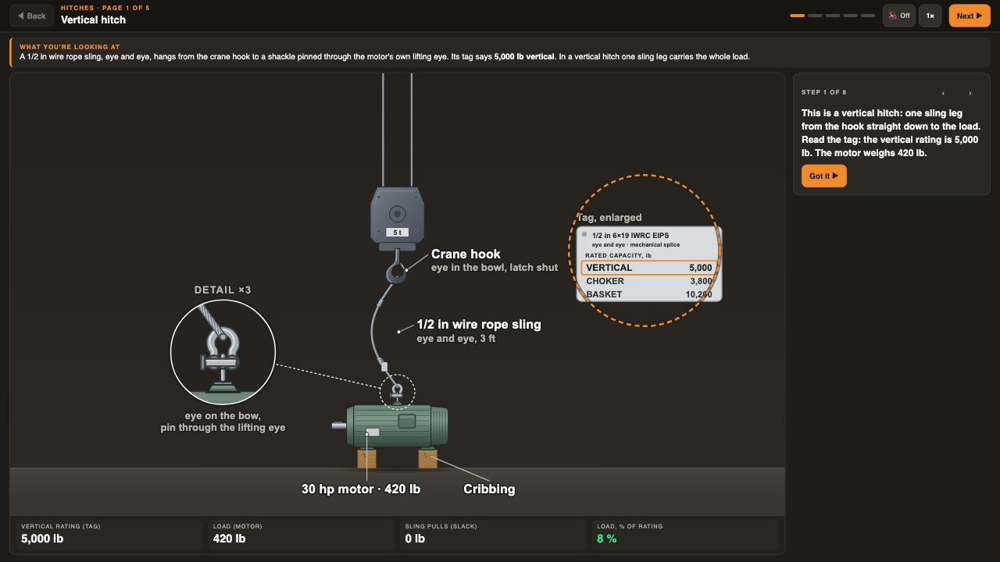
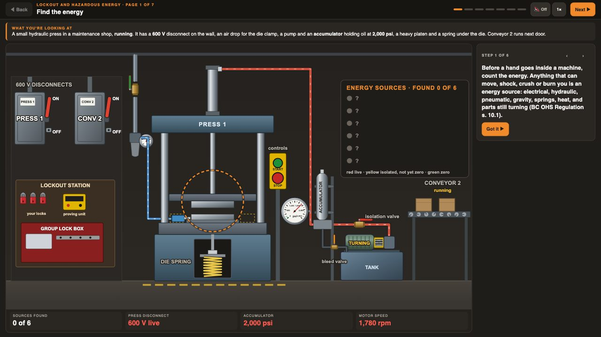
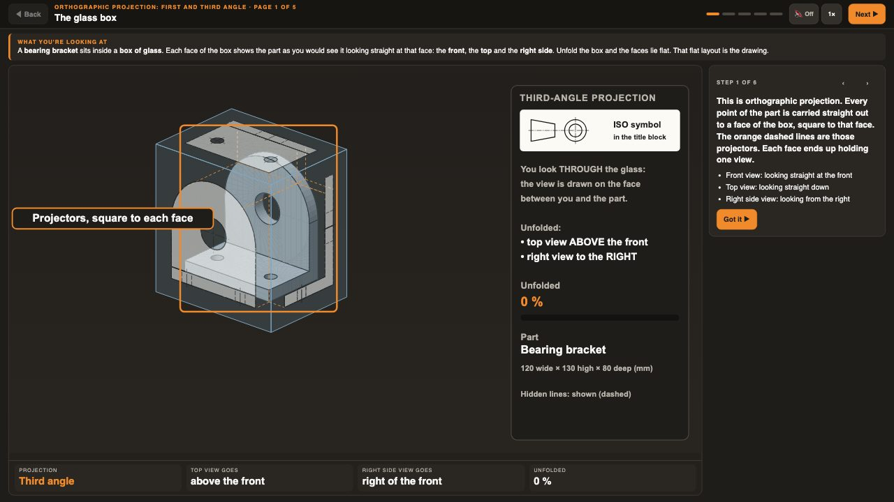
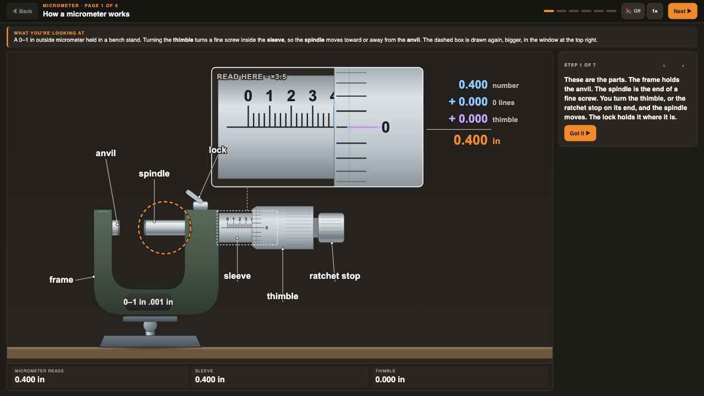
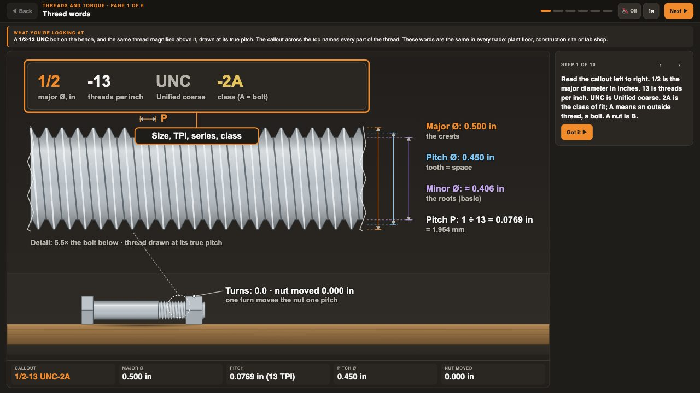
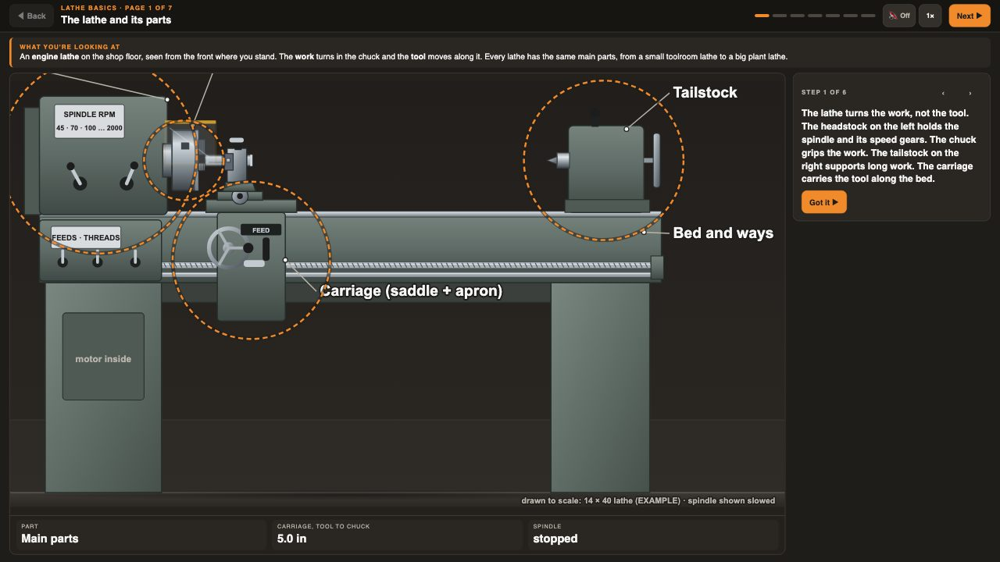
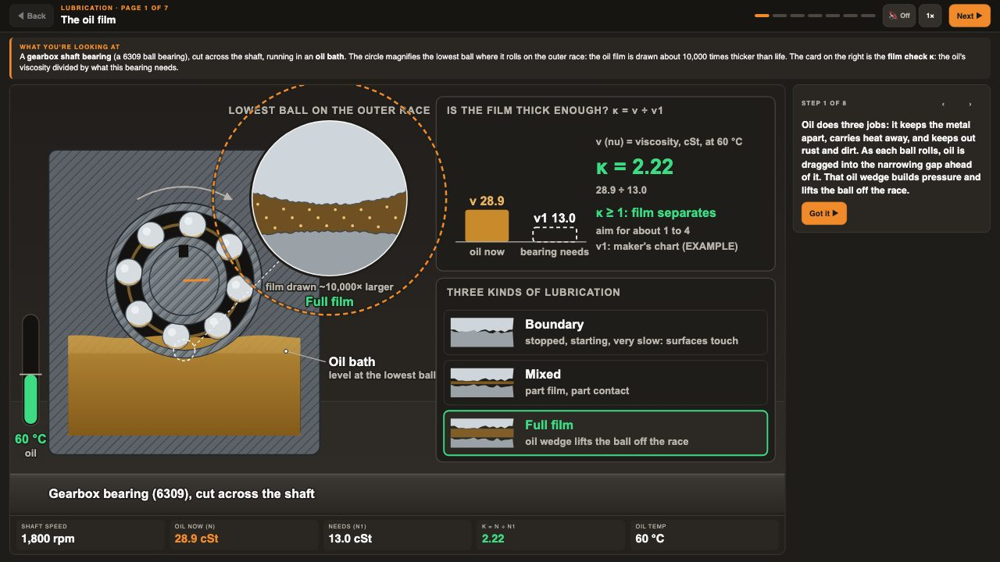

Try a full CrewForge lesson free
These are real lessons from the Level 1 program, open to everyone. No email, no account. Pick a topic, press Start and work the simulator yourself. Each one is extra help alongside your in-school training, the same as every lesson in the program.
Start here: the sample lesson

Hitches
Rig a motor, a length of pipe and a gearbox. Read the sling tag, choke a load, cradle one in a basket and lower the sling angle until the legs are overloaded.
4 rigging lessons in a row
Hitches is lesson 1 of the free Rigging Starter. Work through all 4 in order, the way the rigging unit runs.
- HitchesVertical, choker and basket hitches, and what the sling angle does to each leg
- Beam clamps and anchorsFit a beam clamp, keep the pull straight, trolleys, end stops and snatch block anchors
- Block and tackleParts of line, pull, lead line travel, sheave friction, the anchor and chain falls
- Chain hoistsHand chain and lever hoists: the pull, the ratio and the check before you lift
One sample lesson from each Level 1 unit
8 more lessons, one each from safety, drawings, measuring and layout, fasteners, tools and machining, metallurgy, cutting, lubrication. Each is the whole lesson, start to finish.

Lockout and hazardous energy
Take a running hydraulic press to locked out and verified. Find the electrical, hydraulic, air, gravity and spring energy, bleed the accumulator, block the platen, then prove it is dead. See what happens when a gauge is never checked or nobody does a try-out.

Orthographic projection: first and third angle
Unfold a glass box around a bearing bracket, read a third-angle drawing, then the same part in first angle. Read a first-angle sheet as if it were third angle and see the wrong part come out.

Micrometer
Turn the thimble and watch the spindle move. Read inch and metric micrometers, add the vernier for tenths of a thousandth, then crank one closed on the thimble and see what a missed line costs on a bearing fit.

Threads and torque
Identify a bolt with a pitch gauge, build its proof load, torque it and watch the preload. Force a cross-thread, mix a grade 8 bolt with a grade 2 nut, pull past the click and pressure-test a flange.

Lathe basics
Set the spindle speed for the bar and the tool, face and turn to size, put the tool on centre and turn a pump-shaft spacer. Start the spindle with the key in, run HSS too fast and rough a long bar with no support.

Hardness testing
Run a file test, then step through a Rockwell C test on the bench tester. Pick the right scale, read a Brinell dent under the microscope and check a pump shaft against its drawing. Leave the ball in on a hardened shaft and see what happens.

Oxy-fuel cutting
Store and move cylinders, set up a cutting outfit in order, light it and set a neutral flame, then cut plate from the tip chart. Cause a backfire, oil on a regulator, acetylene past 15 psi and a cut run too fast, safely, on the simulator.

Lubrication
Watch the oil film carry a bearing, pick a viscosity grade, work out how much grease and how often, then keep pumping the grease gun past full and watch the bearing run hot and the seal lip lift.
How a CrewForge lesson works
- Narrated. A narrator reads each step aloud (AI voice). Mute it, slow it down, or read it yourself.
- Step by step. One idea per page. Each step tells you what to do and what to watch for.
- You work the simulator. Turn the handwheel, set the regulator, pull the wrench. Stuck? Hint, then Show me: the simulator does it, then hands back.
- Questions with instant feedback. Pick a wrong answer and you see why it's wrong, then get a new, similar question.
- Failures you can cause safely. Over-torque the bolt, start the lathe with the key in, skip the try-out. See what goes wrong and why, with no one hurt.
- Free play. After the steps, every control unlocks, with Reset and "Give me a challenge".
- Printable summary sheet. The rules and key numbers on a page or two, light on toner.
- PC or phone. Nothing locks, Back and Next always work, and your place is kept in this browser.
These are 12 lessons. Level 1 has 40.
Every Level 1 lesson is built like these, plus unit tests, a timed level exam, progress tracking and a certificate of completion. Level 1 opens for early access in Winter 2027.
More free tools: free simulators · early episodes · study topics · practice exam.
Exam preparation, not a procedure. On the job, check the tag, the manufacturer's data and your lift or work plan.